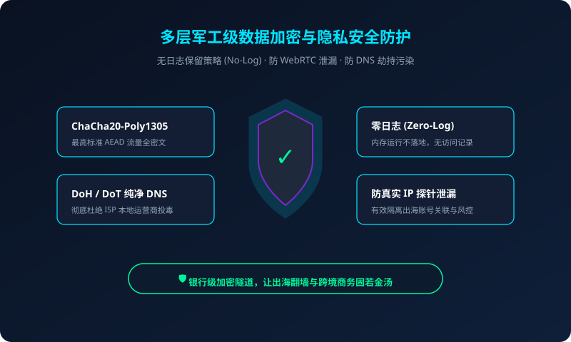

在人工智能全面爆发的时代，ChatGPT (GPT-4o / Canvas) 与 Claude 3.5 Sonnet 已然成为全球程序员、学术科研工作者、文案创作者与企业管理者的核心生产力引擎。每天都有数以百万计的高频代码编写、学术论文润色、跨语言翻译与复杂决策在这些大模型平台上高效运转。
然而，绝大多数用户在拥抱大模型时遇到的第一道天堑，并不是复杂的 Prompt 工程，而是令人抓狂的网络访问受阻——屏幕上频繁弹出的“Error 1020: Access Denied”、“Unable to load site”、“Sorry, you have been blocked”、“Oops, our systems have detected unusual traffic”，甚至刚刚充值了 20 美元订阅费的 Claude 账号被无情封禁。
这些问题绝非偶然。本文将从 Cloudflare 防护体系与 OpenAI / Anthropic 风控模型的底层机理切入，为您详细拆解如何利用 ssrdog机场官网 的纯净专线与精细化客户端规则，实现 AI 工具的永不掉线、零拦截畅通使用。

一、深度解剖：1020 与 Access Denied 拦截背后的三层风控
当我们向 chatgpt.com 或 claude.ai 发送请求时，数据包并非直达模型服务器，而是依次经过了严格的三级过滤网：
- 第一道门槛：Cloudflare WAF 防火墙（阻断 1020 报错源头）
Cloudflare 维护着全球最大的威胁情报库。它会对每一次握手进行 TLS 指纹（JA3/JA4）分析、HTTP/2 请求头顺序比对，并直接查询当前 IP 的历史欺诈行为。普通廉价机场由于几百个人共享同一个机房 IP，往往被判定为“BOT/机器爬虫”，直接抛出 1020 错误阻断连接。 - 第二道门槛：地理位置合规校验（GeoIP 限制）
OpenAI 至今未向中国大陆和中国香港开放服务。如果客户端分流规则不完善，导致部分子域名（如auth0.openai.com或 CDN 节点）误走了香港节点，就会立即弹出“Not Available In Your Country”的报错。 - 第三道门槛：Anthropic / OpenAI 内部账号风控引擎（封号的核心原因）
这层风控直接关联您的账号生命周期。如果您每次提问都在几分钟内从美国 IP 跳到日本 IP，或者 IP 属于信誉极差的公有云服务器，风控系统会判定该账号存在多机共享或异常滥用，从而实施静默封号（Banned）。
二、为什么市面上的普通便宜梯子极易“翻车”？
很多用户不理解：“为什么我的梯子能看 YouTube 4K，却进不去 ChatGPT？”
- YouTube 容忍度高：只要能推流，哪怕是机房 IP，YouTube 都能正常播放；
- AI 大模型防守森严：OpenAI 和 Anthropic 面临全球黑客的 API 盗刷与越狱攻击，他们对 IP 的审查标准堪比跨国银行与信用卡网关，绝不接受任何被污染的“脏 IP”。
拒绝 1020 报错，为生产力大模型护航
SSRDog 节点集成高信誉原生住宅 IP，实测 100% 顺畅连通 GPT-4o 与 Claude 3.5。
三、彻底杜绝 1020 与封号的实操四步法
为了保证您的日常 AI 对话与 API 调用的绝对稳定，请严格遵循以下配置原则：
第一步：选择 SSRDog 原生纯净节点
在 Clash Party、Clash Verge 或 Shadowrocket 中，选择 SSRDog 机场 标有【日本 JP 专线】、【新加坡 SG 专线】或【美国 US 专线】的节点。SSRDog 的这些节点均采用海外本土 ISP 原生宽带 IP，欺诈值近乎为 0，能够轻松通过 Cloudflare Turnstile 验证码验证。
第二步：完善 Clash 中的 OpenAI / Claude 专用策略组
确保在客户端的规则配置中，包含完整的 AI 大模型分流域名名单，防止域名泄漏或直连：
# OpenAI 核心域名分流规则
- DOMAIN-SUFFIX,openai.com,AI-Proxy
- DOMAIN-SUFFIX,chatgpt.com,AI-Proxy
- DOMAIN-SUFFIX,sentry.io,AI-Proxy
- DOMAIN-SUFFIX,identrust.com,AI-Proxy
- DOMAIN-KEYWORD,openaicom,AI-Proxy
# Anthropic Claude 域名分流规则
- DOMAIN-SUFFIX,anthropic.com,AI-Proxy
- DOMAIN-SUFFIX,claude.ai,AI-Proxy在策略组 AI-Proxy 中，手动指定一个稳定的日本或美国 IPLC 节点，切记不要指定为香港节点或自动测速自动切换（URL-Test），以防在交谈过程中 IP 频繁闪烁导致账号风控。
第三步：清除历史 Cookie 与浏览器缓存
如果您之前在某个错误节点上被 Cloudflare 拦截过，浏览器会持久化记录该“阻止标记 (cf_clearance)”。请在浏览器中按 F12 打开开发者工具，清除 chatgpt.com 和 claude.ai 的所有 Cookie 与 LocalStorage，或直接使用 Chrome 的无痕模式（Incognito Window）重新登录。
第四步：保持系统时区与节点一致
对于需要重度使用 Claude 的用户，建议将电脑操作系统的“时区”调整为节点所在地区（如使用美国节点时，时区调为太平洋时间或东部时间），并保持浏览器语言中英语（en-US）拥有较高的优先级，这能最大化模拟真实海外用户的环境特征。
四、常见问题排查与技术答疑
这说明您当前节点的 IP 处于灰度审查边缘。解决方法：1. 在客户端中切换到 SSRDog 另一条备用美国或日本原生专线；2. 关闭浏览器的第三方去广告插件（如 uBlock Origin），部分广告拦截脚本会阻断 Cloudflare 的挑战脚本执行；3. 检查系统时间是否精准无偏差。
API 请求同样会经过 api.openai.com 的网关验证。如果发起 API 调用的服务器或本地节点属于被封禁网段，会直接收到 HTTP 403 错误。将 API 请求代理至 SSRDog 专线后，可确保 100% 成功握手，极速响应流式（Stream）输出。
移动端 App 还会检测手机的系统区域设置。在 iPhone 的【设置】->【通用】->【语言与地区】中，建议将地区改为“美国”或“日本”。在 Shadowrocket 小火箭中保持全局路由为“配置”，选择 SSRDog 对应节点即可秒开 App，语音实时对话（Voice Mode）延迟极低无卡顿。
五、总结
AI 大模型是推动个人与企业飞速进化的超级工具，切莫让糟糕的网络链路成为制约效率的瓶颈。选用 ssrdog机场官网 纯净、长效、高信誉的专属专线，彻底告别 1020 与封号焦虑，尽情探索前沿智能的无限可能。